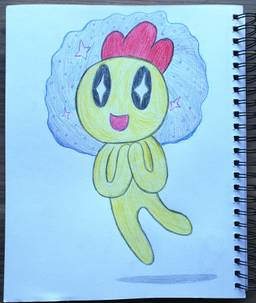
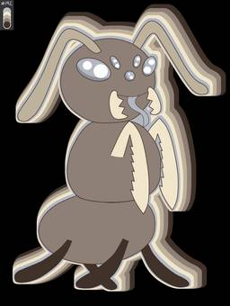

<!doctype html><html lang="en"><title>Menu - 2</title><meta name="viewport" content="width=device-width,initial-scale=1"><meta name="description" content=""><link href="../gallery.css?v=1752702618" rel="stylesheet" type="text/css" media="all"><header><h1> Menu - 2</h1><p></p><a href="../index.html">&#8592; Back to the index!</a></header><section><nav class="page-links"><span>Pages ... </span><a href="1.html">&#8592;</a><ul><li><a href="index.html">0</a><li><a href="1.html">1</a><li><b>2</b></ul></nav><section id="photos"><figure><a href="images/twirly.jpg" target="_blank"><span class="photo-filename">twirly.jpg</span></a></figure><figure><a href="images/whatwhat.jpg" target="_blank"><span class="photo-filename">whatwhat.jpg</span></a></figure><figure><a href="images/why.png" target="_blank"><span class="photo-filename">why.png</span></a></figure><figure><a href="images/wispange sketch1.png" target="_blank"><span class="photo-filename">wispange sketch1.png</span></a></figure><figure><a href="images/yoruro.png" target="_blank"><span class="photo-filename">yoruro.png</span></a></figure></section><nav class="page-links"><span>Pages ... </span><a href="1.html">&#8592;</a><ul><li><a href="index.html">0</a><li><a href="1.html">1</a><li><b>2</b></ul></nav></section><footer>Made with <a href="https://melonking.net/melon?z=/free/software/gallery-maker" target="_blank">Melon's Gallery v0.0.2</a> - Updated: Jul 16, 2025</footer><audio autoplay loop></audio><script src="../gallery.js?v=1752702618"></script>